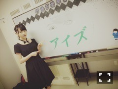
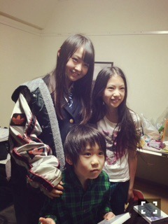
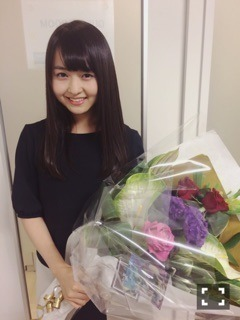

| 2015/07 06 Mon | 乙女の感覚。652回目 |
おはこんにちは∠( 'ω')／
セブンイレブンのグッズ
ゲットしたかな？
日経エンタの
アンダーセンター座談会読んだかな？

「羽根の記憶」のMV公開された！
MVは指揮者に操られて
歌って踊るみんな。
それぞれのソロカット、
場所が違う分、雰囲気も違います。
私はなんと古着屋でした。
普通に素で楽しむよね。
監督は岡川太郎さん！
他の星からでお世話になりました。
2年ぶり...
私が古着が好きなの
知ってたのかなあ←
今度の乃木坂46SHOW!で
じょしらく密着と
太陽ノックと他の星から披露するんだ
お楽しみに（≧∇≦）

2日にイオンシネマ新百合ケ丘、
昨日はアキバシアターと
ブリリアショートショートシアターで
舞台挨拶でした！
映画「アイズ」舞台挨拶
これにて終了になります。

ここから長文になります、
私は、乃木坂に入って
個人PV等でいろんなことを
経験するに連れて
映像で表現することを好きになり
お芝居に興味を持ちました。
なので主演が決まった時は、
やっと特典映像だけじゃなく
たくさんの人に観てもらえる！
という気持ちでした。
作品は鈴木光司さん原作、
自分に務まるのか不安でしたが
なによりお芝居できることへの
わくわくしかなかった。
そんな中、撮影が中断になった時は
本当に悔しかった。
半年ほど経ってようやく
あの時の撮影は残念だったけど、
良い経験だったな、
と思えるまで落ち着きました。
なので再撮すると聞いて、
あの役に気持ちが戻れる気がしなくて
いろんなことが怖くなって
自信がいつの間にかなくなってて。
すぐに返事ができませんでした。
それに、もう次の気持ちに
切り替えてたから。
そんなこんなで葛藤しながらも
再撮影が始まりました。
もう不安しかなくて、怖かった。
でも、監督やスタッフさんが
気持ちをつくれるよう
配慮してくださって。
共演者の方の芝居に圧倒されて、
このままじゃいけないと思えて、
そのおかげで最後まで
由佳里でいることができました。
それから上映して一ヶ月。
完成披露試写会で初めて、
共演できて本当に良かった
伊藤さんが主演で良かった
ということばを言っていただいて
私は映画のことを何も知らなくて、
主演としての責任を
しっかりと持ってなかった。
環境に甘えていたから簡単に
「できない」なんて言えたんだ
というのに気がつきました。
すぐに返事をしなかった
自分に後悔しています。
この一ヶ月間、
監督、共演者の皆さんからの
映画に対する熱意を聞いて、
舞台じょしらくを経験して、
お芝居に対する思いが
強くなりました。
私のいないところで宣伝活動して
地方の舞台挨拶にも
わざわざ駆けつけてきてくれた
監督、共演者の方
そしてファンの皆さんのおかげで
この映画が大きくなっているのを
実感しました。
人の力って凄い！本当に凄いです。
映画も舞台も
スタッフさんや共演者の皆さんに
すごく恵まれました。
本当に幸せな経験をしました。
感謝の気持ちでいっぱい。

現場で私を癒してくれた2人
由佳里になれて良かった。
感覚はまだわかりません。
役になった瞬間もわかりません。
ただ、私ではありませんでした。
この感覚を味わえている時が
なによりも楽しいのです。
映像も写真も舞台も好きだ、
撮ってみたい、撮られたい
撮りたいと思われる人間になりたい
いろんな人間になりたいヽ(ﾟ､｡)ﾉ
鈴木光司さんの作品に
関われたことは一生誇り。
この映画が
私の将来の第一歩であったのは
間違いありません。

7月、8月の期間
秋葉原の大型モニターで
映画の告知CMが流れるよ！
時報も流れるよ＼(^o^)／
ぜひ行って見てね。
これからもアイズが
たくさんの人の目に届くといいなあ
アイドルホラーではありません。
スタッフさん演者さん全員の
熱意が込められた、
ひとつの素晴らしい作品です。
観て思ったことを共有してください。
たくさん考えてください。
また観たくなるはずです。
ホラーが苦手な方にこそ
観てほしい！
よろしくお願いします＼(^o^)／
ドキュメンタリー映画も！
よろしくお願いします＼(^o^)／
そして今日発売のMdN読むべし！
制服特集、表紙が最高過ぎる。
そして連載は少女漫画のデザインを
手掛ける川谷康久さん！
本当に素敵なデザイナーさんです。
女の子の気持ちがわかる人。
私も負けじとこれからも
少女漫画を愛します。
そして、一生乙女でいたい。
みなさん、少女漫画の表紙に
ぜひ注目してみてください。
伝われ、伝われ！
MdNやばいです！！！
毎号、掴まれる。好きだ
こんな素敵な雑誌に連載持った
私は幸せです。がんばろう
CUTiEもがんばらねば！
まりか
コメント(658)
2015/07/06 11:42